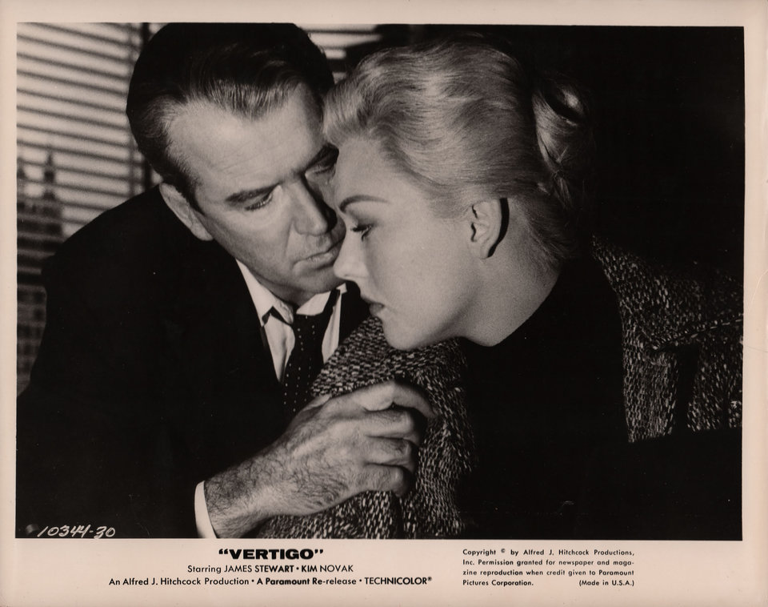

Similar Movies


|  |
VertigoYou can’t fall in love twice with the same woman, nor with the same movie. (Staying in love: a completely different matter.) So to those of you who have never seen Alfred Hitchcock’s voluptuous romantic thriller—a circumstance that can be remedied this week at Film Forum—allow us a little envy. For these lucky viewers, the free fall begins now. It starts on a San Francisco rooftop, the edge of which detective Scottie Ferguson (James Stewart) clings to for life, while another cop plunges to his death. Our hero then dives further into the husky blondness of Madeleine (Kim Novak, an iconic turn), who might be unwell. And still, the bottom is nowhere in sight. film listesi |
|
|
|